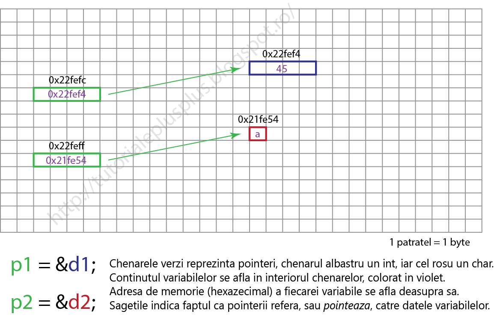
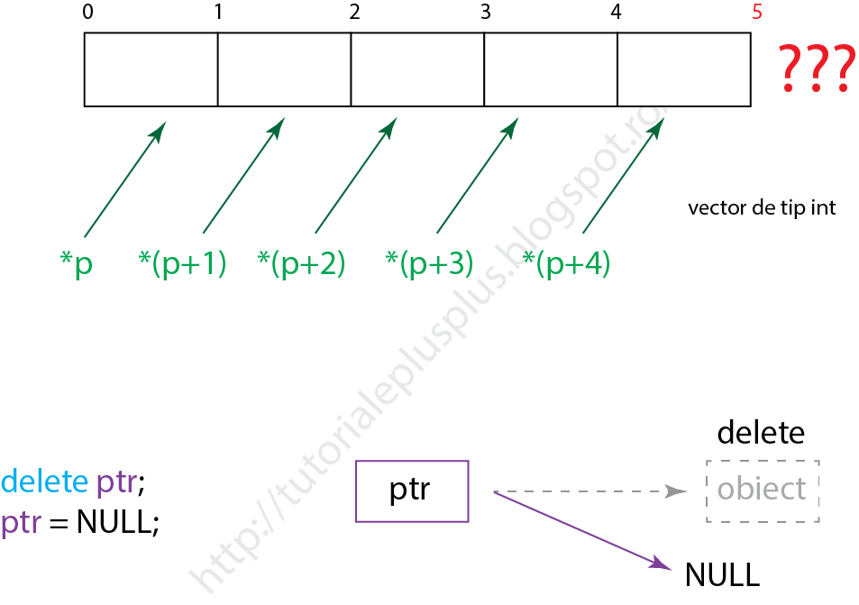

CE ESTE UN POINTER?
Un pointer este o variabilă care memorează o adresă de memorie.
Un pointer se declară în felul următor:
Aici tip* reprezintă tipul de dată al variabilei (obiectului) pe care pointerul îl referă.
Un pointer este un pointer deoarece el memorează o adresă şi ocupă acelaşi spaţiu de memorie cu un pointer de alt tip*.
Totuşi, asta nu înseamnă că puteţi memora adresa unui double într-un pointer int* sau să interschimbaţi adrese între pointeri de tipuri diferite.
Pe lângă memorarea adreselor, pointerii mai pot accesa şi conţinutul de la respectivele adrese. Decodificarea conţinutului se face pe baza tipului pointerului tip*.
Spaţiul de memorie pe care îl ocupă un pointer depinde de compilator şi sistemul de operare.
Exemplu de pointeri:
int * p1; // Refera un int
char * p2; // Refera un char
Aveţi grijă să iniţializaţi un pointer înainte de a-l folosi, altfel puteţi accesa zone de memorie pentru care programul vostru nu are acces, iar acest lucru poate cauza erori în program.
Puteţi iniţializa un pointer fie cu o adresă de memorie, fie cu pointerul NULL nullptr.
Acest keyword a fost introdus în noul standard C++11 şi diferă de NULL prin faptul că nu este un întreg, pur şi simplu reprezintă un pointer NULL.
NULL în C/C++ este definit ca #define NULL 0 - practic NULL este constanta zero.
Dacă compilatorul vă permite, folosiţi nullptr în loc de NULL.
Adresa unei variabile se obţine cu operatorul de referenţiere (&) (sau operatorul adresă).
Conţinutul unei adrese de memorie (stocată într-un pointer) se obţine cu operatorul de dereferenţiere (*) (sau operatorul de indirectare).
Nu confundaţi acest operator cu steluţa (*) din declararea unui pointer! Ea face parte din tipul pointerului.
Iată un exemplu mai concret:
#include
using namespace std;
int main()
{
int * p1; double * p2;
int d1 = 45; double d2 = 3.14;
p1 = &d1; // p1 refera variabila d1
p2 = &d2; // p2 refera variabila d2
// Afisez adresele de memorie stocate in cei doi pointeri
cout << p1 << ' ' << p2 << '\n';
// Afisez continutul stocat la adresele de memorie
// din cei doi pointeri
cout << *p1 << ' ' << *p2 << '\n';
cout << sizeof(p1) << ' ' << sizeof(p2);
return 0;
}
Output:
0x22fef4 0x22fee8
45 3.14
4 4
Prin convenţie numerele hexazecimale sunt reprezentate cu prefixul 0x.
Operatorul sizeof(ob), unde ob reprezintă un tip (int, char, float, etc.) sau un obiect (variabilă), returnează mărimea, în bytes, a argumentului.
După cum vedeţi, pointerii ocupă 4 bytes de memorie (în sistemele de 32-biţi).

Puteţi scădea doi pointeri ca să obţineţi numărul de elemente de tipul respectiv ce încap între ei.
#include
using namespace std;
int main()
{
double * p1, * p2;
double d1 = 1.1, d2 = 2.2;
p1 = &d1; p2 = &d2;
cout << p1 << ' ' << p2 << '\n';
cout << p1 - p2;
return 0;
}
Output:
Diferenţa dintre 0x22fef0 şi 0x22fee8 este 0x8, adică 8, iar 8 bytes este spaţiul de memorie pe care îl ocupă 1 double, deci rezultatul afişat este 1.
Puteţi scădea numai pointeri ce referă acelaşi tip de dată.
Dacă p1 ar fi fost int*, codul de mai sus nu ar fi compilat.
ALOCAREA DINAMICĂ
Când declaraţi un vector trebuie să precizaţi numărul de elemente ce-l vor alcătui.
Asta înseamnă că stabiliţi spaţiu de memorie ocupat de vector înainte de a ştii exact numărul de elemente ce va fi memorat în vectorul respectiv.
Vectorii statici pot fi ineficienţi din punct de vedere al memoriei ocupate atunci când nu se ştie exact câte elemente va memora vectorul.
De aceea C++ ne pune la dispoziţie operatorii new şi delete cu care putem aloca / dealoca memorie dinamic în timpul execuţiei programului.
Cu new se alocă (rezervă) memorie. Operatorul returnează adresa de memorie a spaţiului alocat.
Sau putem aloca un bloc de memorie (vector dinamic):
tip* var = new tip[nr_elem];
Nu există succes garantat când alocaţi memorie dinamic.
Operatorul new alocă memorie din zona liberă (heap).
Este posibil ca această zonă din memorie să fie ocupată de alte aplicaţii sau starea sistemului să nu permită o astfel de alocare.
În această situaţie new lansează o excepţie. Puteţi folosi (nothrow) astfel încât new să returneze pointerul NULL în caz de eşec.
tip* var = new (nothrow) tip;
Memoria alocată cu new - numai aceasta - poate fi dealocată (eliberată) cu delete.
delete var;
delete[] var; // pentru vectori
După ce aţi folosit delete pe un pointer, acesta nu mai indică către o adresă validă (respectiva adresă nu mai este rezervată pentru programul vostru), de aceea este bine să-i atribuiţi valoarea nullptr (sau NULL).
ATENŢIE: delete nu distruge variabila pointer! El eliberează spaţiul de memorie indicat de pointer prin adresa pe care o memorează.

Nu uitaţi să dealocaţi spaţiul de memorie atunci când nu mai aveţi nevoie de el!
Dacă nu dealocaţi memoria, aceasta rămâne rezervată, degeaba, pentru aplicaţia voastră, când alte aplicaţii ar putea avea nevoie de ea sau chiar programul vostru, care alocă fără să elibereze, poate rămâne fără spaţiu de lucru. Fenomenul se numeşte memory leak.
Un exemplu de alocare dinamică:
#include <iostream>
using namespace std;
int main()
{
int* x = new int;
*x = 98;
cout << *x << ' ' << x;
delete x;
return 0;
}
Output:
Un vector static este practic un pointer constant. El referă numai blocul de memorie care îi este atribuit de compilator.
Numele vectorului este un pointer către primul element din vector. Exemplu:
#include <iostream>
using namespace std;
int main()
{
int v[] = {1, 2, 3, 4, 5};
cout << *v; // Se va afisa 1
return 0;
}
Puteţi accesa elementele unui vector, static sau dinamic, în două moduri:
v[i]; // SAU
*(v+i);
// unde i este un intreg
Atunci când adunaţi sau scădeţi un intreg dintr-un pointer, deplasaţi pointerul peste i blocuri de memorie de tipul referit de pointer.
De exemplu, dacă un pointer (int* ptr;) referă / indică adresa 0x22feec, atunci ptr+1 va referi adresa 0x22fef0.
0x22feec + 4 = 0x22fef0 (4 este mărimea în bytes a tipului int). Vezi imaginea de mai sus.
Aşadar, putem folosi operatorii ++ şi -- pentru a parcurge un vector:
#include <iostream>
using namespace std;
int main()
{
int v[] = {1, 2, 3, 4, 5};
for (int i = 0; i < 5; i++)
cout << *(v+i) << ' '; // v[i]
return 0;
}
Din acest motiv vectorii se transmit prin referinţă.
Deoarece ei sunt nişte pointeri constanţi a căror adresă (stocată în ei) este transmisă (prin valoare) parametrului funcţiei, care este un vector.
Acel vector accesează, şi eventual modifică, conţinutul de la adresa de memorie primită.
Un exemplu cu vectori dinamici. Programul cere utilizatorului să introducă o listă de numere, iar acesta calculează şi afişează suma lor:
#include <iostream>
using namespace std;
int main()
{
int n, suma = 0;
cout << "Cate numere vrei sa adun? "; cin >> n;
int * nr = new int[n];
cout << "Scrie numerele despartite prin spatiu: ";
for (int i = 0; i < n; i++)
cin >> nr[i];
// Suma
for (int i = 0; i < n; i++)
suma += nr[i];
cout << "Suma lor este: " << suma;
delete[] nr;
return 0;
}
Pointerii constanţi sunt de două feluri:
- Pointeri care nu pot modifica datele referite (date constante), dar care pot fi modificaţi (le puteţi atribui o altă adresă);
- Pointeri care pot modifica datele referite (date neconstante), dar care nu pot fi modificaţi (nu le puteţi atribui o altă adresă);
- Pointeri care nu pot modifica datele referite şi nu pot fi modificaţi.
Exemplu:
#include <iostream>
using namespace std;
int main()
{
const int sz = 10;
int money = 3000;
const int* pSz = &money;
int* const pMoney = &money;
const int* const ptr = &sz;
pSz = &sz; // OK!
// *pSz = 11; // Eroare! Nu pot modifica variabila referita
*pMoney = 4000; // OK!
// pMoney = &sz; // Eroare! Pointer constant
// ptr = &money; // Eroare!
// *ptr = 13; // Eroare
pSz = &money;
// Eroare! Chiar daca money nu este const
// Pointerul n-o poate modifica
// *pSz = 5000;
// Iar daca se incearca modificarea unei variabile const
// Cu un pointer neconstant, din nou eroare
// const int* este DIFERIT de int*
// &sz returneaza o adresa (pointer) de tip const int*
// int* pt = &sz;
// *pt = 17;
return 0;
}
Pointerii pot fi parametri ai unei funcţii.
Studiaţi cu atenţie exemplele următoare.
#include <iostream>
using namespace std;
void vreauPointer(int* p)
{
cout << "In functie *p = " << *p << '\n';
*p = 90; // Modific continutul de la adresa memorata in p
cout << "Dupa modificare *p = " << *p << '\n';
int x = 12;
// Modificarea pointerului este vizibila doar aici
// Deoarece variabila pointer nu este
// transmisa prin referinta
p = &x;
cout << "In functie p refera " << p << '\n';
}
int main()
{
int q = 70;
int* ptr = &q;
cout << "In main q = " << q << '\n';
cout << "In main *ptr = " << *ptr << '\n';
cout << "In main ptr refera " << ptr << '\n';
vreauPointer(ptr);
cout << "Dupa apel q = " << q << '\n';
cout << "Dupa apel *ptr = " << *ptr << '\n';
cout << "Dupa apel ptr refera " << ptr << '\n';
return 0;
}
Output:
In main q = 70
In main *ptr = 70
In main ptr refera 0x22fef8
In funtie *p = 70
In functie p refera 0x22fef8
Dupa modificare *p = 90
Dupa modificare p refera 0x22fe6c
Dupa apel q = 90
Dupa apel *ptr = 90
Dupa apel ptr refera 0x22fef8
Pointerii pot fi transmişi prin referinţă.
#include <iostream>
using namespace std;
void vreauPointer(int* &p) // Referinta!
{
cout << "In functie *p = " << *p << '\n';
*p = 90; // Modific continutul de la adresa memorata in p
cout << "In functie p refera " << p << '\n';
cout << "Dupa modificare *p = " << *p << '\n';
int x = 12; // Aceasta variabila va fi distrusa la sfarsitul functiei
// Modificarea pointerului este vizibila in afara
// Deoarece variabila pointer este
// transmisa prin referinta
p = &x;
cout << "Dupa modificare p refera " << p << '\n';
}
int main()
{
int q = 70;
int* ptr = &q;
cout << "In main q = " << q << '\n';
cout << "In main *ptr = " << *ptr << '\n';
cout << "In main ptr refera " << ptr << '\n';
vreauPointer(ptr);
cout << "Dupa apel q = " << q << '\n';
cout << "Dupa apel *ptr = " << *ptr << '\n';
cout << "Dupa apel ptr refera " << ptr << '\n';
return 0;
}
Output:
In main q = 70
In main *ptr = 70
In main ptr refera 0x22fefc
In funtie *p = 70
In functie p refera 0x22fefc
Dupa modificare *p = 90
Dupa modificare p refera 0x22fe6c
Dupa apel q = 90
Dupa apel *ptr = 4683872
Dupa apel ptr refera 0x22fe6c
Observaţi că *ptr referă o valoare ciudată. Acest lucru se întâmplă deoarece ptr memorează adresa variabilei x din funcţia vreauPointer().
Când o funcţie îşi termină execuţia toate variabilele declarate în acea funcţie (+parametrii) sunt distruse (memoria ocupată de ele este eliberată).
La respectiva adresă rămâne numai gunoi (junk), un şir de 1 şi 0 care nu are niciun sens pentru programul vostru, dar acesta îşi face datoria şi afişează interpretarea int, în acest caz, a biţilor.
Acelaşi lucru se întâmplă şi când folosiţi un pointer neiniţializat sau o variabilă neiniţializată.
REFERINŢE
O referinţă este un alias pentru o variabilă.
Dacă variabila reprezintă o anumită zonă de memorie, şi referinţa va reprezenta aceeaşi zonă de memorie.
Referinţele se declară cu (&).
#include <iostream>
using namespace std;
int main()
{
int x = 6;
int& q = x; // q refera acelasi spatiu de memorie ca si x
q += 5; // Referintele se folosesc normal ca si variabilele
cout << x; // se va afisa 11
return 0;
}
Referinţele trebuie iniţializate!
Nu puteţi iniţializa o referinţă cu o constantă!
Trebuie să fie un obiect / variabilă.
Puteţi avea referinţe constante care referă variabile constante.
#include <iostream>
using namespace std;
int main()
{
const int p = 5;
const int& x = p;
cout << x; // 5
return 0;
}
De îndată ce a fost iniţializată, referinţa nu mai poate fi schimbată. Nu mai aveţi cum.
Referinţa se comportă ca o altă variabilă.